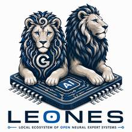
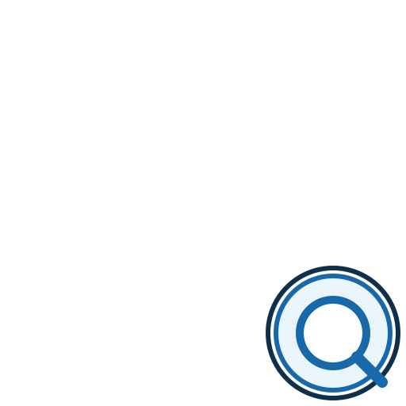

Si solo quieres ejecutar un LLM
Empieza por Hardware → Atlas → Runtime → Evaluación.
El mapa canónico del ecosistema: cada pilar tiene una responsabilidad diferenciada, una razón de existir, una evolución prevista y un estado.


PROSPECTOR → ATLAS → TASK INTELLIGENCE → ROUTER
↓
┌─────────────────┼─────────────────┐
↓ ↓ ↓
QUANT FINE-TUNING AGENTS
└─────────────────┼─────────────────┘
↓
RUNTIME
↓
BENCHMARK & EVALUATIONProspector descubre. Atlas conserva conocimiento. Task Intelligence interpreta la necesidad. Router decide. Quant y Fine-Tuning adaptan. Agents actúa. Runtime ejecuta. Benchmark & Evaluation mide y devuelve evidencia al sistema.
Descubre qué está cambiando. Rastrea modelos, runtimes, harnesses, skills, cuantizaciones, eficiencia, hardware y benchmarks.
Conserva el conocimiento estructurado. Modelos, familias, organizaciones, licencias, formatos, hardware, runtimes, benchmarks y evidencia con procedencia.
Entiende qué se quiere conseguir. Convierte una petición humana en requisitos operativos: contexto, herramientas, memoria, RAG, shell, filesystem, latencia o verificación.
Decide qué pila utilizar. Combina tarea, hardware, modelo, cuantización, backend y evidencia.
Adapta la representación del modelo. Evalúa calidad ↔ memoria ↔ velocidad y conserva trazabilidad.
Adapta modelos a necesidades concretas. Incluye PEFT, LoRA y QLoRA cuando proceda.
Convierte el modelo en capacidad de acción. Planificación, herramientas, memoria, RAG, workflows, tool-calling y recuperación ante errores.
Ejecuta localmente. Abstrae los motores de inferencia para que LEONES no dependa de una aplicación concreta.
Mide y produce evidencia. Incluye inferencia, memoria, latencia, estabilidad y evaluación para tareas agentivas.
DESCUBRIR → CONOCER → ENTENDER → DECIDIR → ADAPTAR → ACTUAR → EJECUTAR → MEDIR
↑ ↓
└──────────────────────────── APRENDER ← EVIDENCIA ─────────────────┘Los estados de los pilares no significan que una capacidad no exista en el repositorio: indican el grado de madurez de su implementación como componente del ecosistema.
Empieza por Hardware → Atlas → Runtime → Evaluación.
Empieza por Task Intelligence → Router → Agents → Runtime → Evaluación.
Empieza por Prospector → Atlas → Benchmark & Evaluation.
Usa las herramientas locales y la ruta de Manada; compartir resultados debe ser voluntario y respetar privacidad.